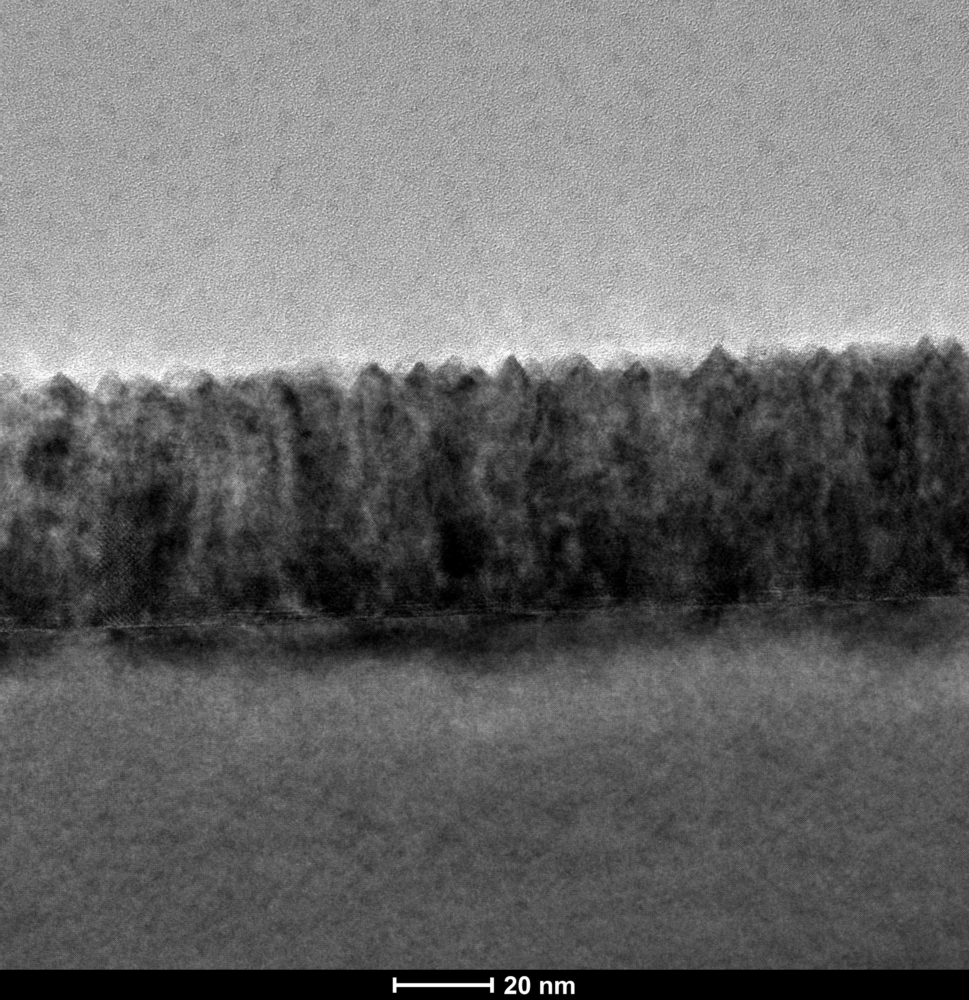

Au–CeO₂ vertically aligned nanocomposite01Emerging devices · Compact modeling
Making memristor programming predictable
Measurement-calibrated compact models and programming strategies that account for nonlinear switching and post-write relaxation.
22% → 94%Targeting success within ±0.05 decade on the evaluated cell
Explore the project